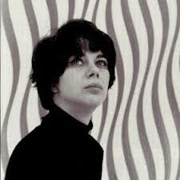
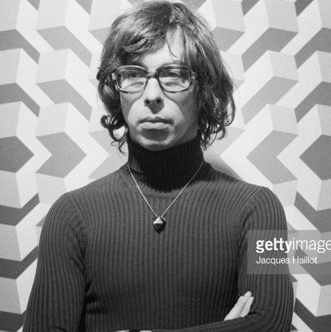
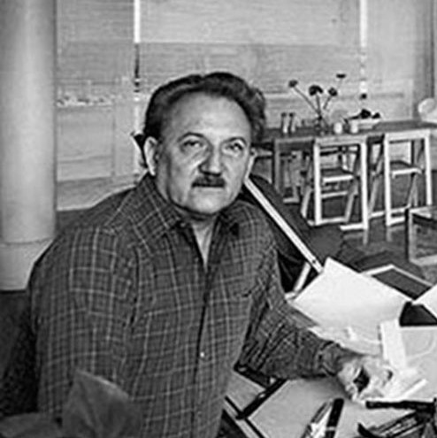
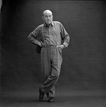

Bridget Riley
At the beginning of World War II Riley's father was called up into the army and Bridget Riley, together with her mother and sister Sally, moved to a cottage in Cornwall. The cottage, not far from the sea near Padstow, was shared with an aunt who was a former student at Goldsmiths' College, London. Primary education came in the form of irregular talks and lectures by non-qualified or retired teachers. She attended Cheltenham Ladies' College (1946–1948) and then studied art at Goldsmiths College (1949–52), and later at the Royal College of Art (1952–55). There her fellow students included artists Peter Blake, Geoffrey Harcourt (the retired painter, also noted for his many well known chair designs) and Frank Auerbach. In 1955 Riley graduated with a BA degree.

Richard Anuszkiewicz
He was one of the founders and foremost exponents of Op Art, a movement during the late 1960s and early 1970s. Victor Vasarely in France and Bridget Riley in England were his primary international counterparts. In 1964, Life magazine called him "one of the new wizards of Op". More recently, while reflecting on a New York City gallery show of Anuszkiewicz's from 2000, the New York Times art critic Holland Cotter described Anuszkiewicz's paintings by stating, "The drama -- and that feels like the right word -- is in the subtle chemistry of complementary colors, which makes the geometry glow as if light were leaking out from behind it."

Jean-Pierre Yvaral
Yvaral studied graphic art and publicity at the École des Arts Appliqués in Paris between 1950 and 1953. In 1960, Yvaral co-founded the Groupe de Recherche d’Art Visual (GRAV) with Julio Le Parc, François Morellet, Francisco Sobrino, Horacio Garcia Rossi and Joel Stein, seeking to develop a coherent abstract visual language composed of simple geometric elements.

Alejandro Otero
Alejandro Otero studied art at the Escuela de Artes Plásticas y Artes Aplicadas de Caracas from 1939 to 1945. In 1940 he won a prize in the First Venezuelan Official Art Salon. After his studies, Otero traveled to New York and Paris where he focused his work on a revision of Cubism in 1945, living in Paris until 1952. In 1945 he also went to Washington, D.C., where he exhibited figurative works at the Pan American Union.He was married to Venezuelan artist Mercedes Pardo in London, 1951. Descendants: Mercedes Otero Pardo, Carolina Otero Pardo, Alejandro Otero Pardo and Gil Otero Pardo

Dieter Roth
He was born Karl-Dietrich Roth in Hannover, the first of three sons. His mother Vera was German; his father Karl-Ulrich was a Swiss businessman. After the beginning of World War II, Roth was to spend each summer in Switzerland at the behest of the Swiss charity Pro Juventute, a group trying to protect Swiss-German children from the worst ravages of the war. By 1943 the exile had become permanent, and Roth was sent to live with a family in Zürich. This house, the home of the family of Fritz Wyss, was shared with Jewish and communist artists and actors. It was here that Roth would be encouraged to start painting and to write poetry. He wasn't to be re-united with his family, by now utterly destitute, until 1946.